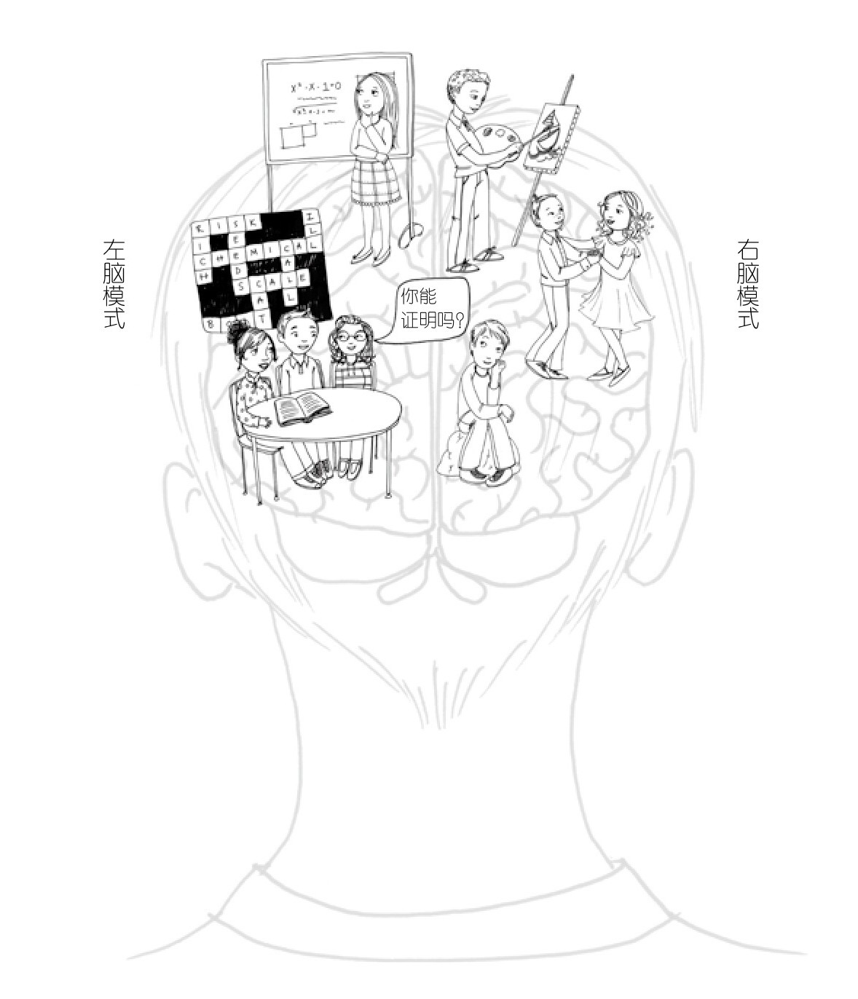
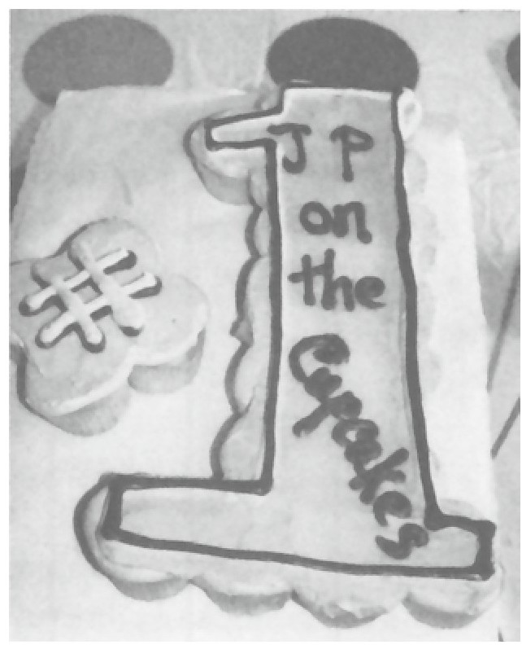
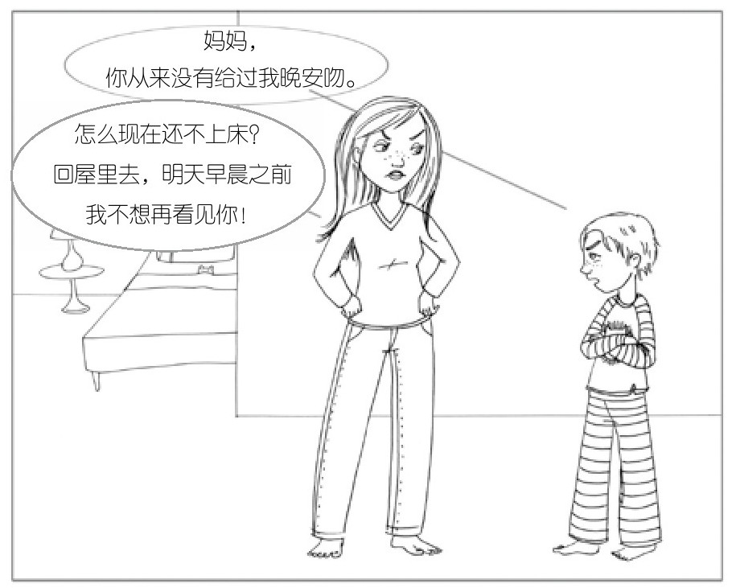
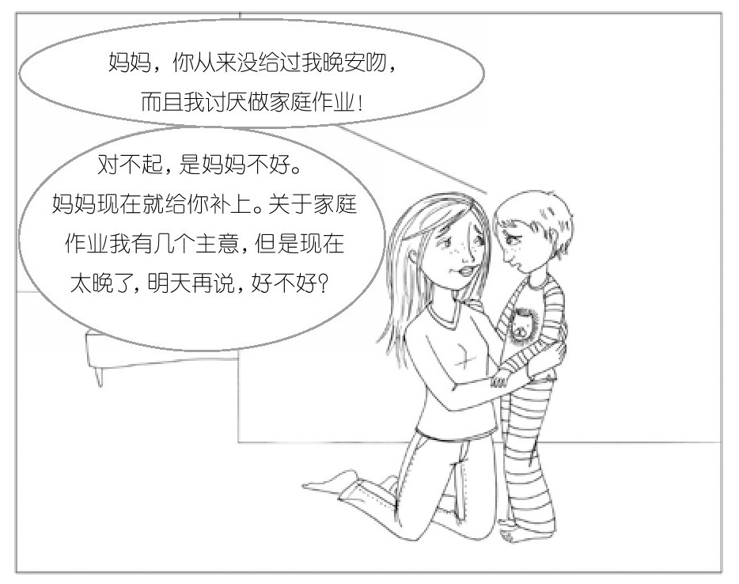

02 · 孩子情绪崩溃时，先拥抱，再讲理
01 篇结束的时候，我们知道了大脑不是长好的，是被每一次互动"布线"出来的。西格尔把这个过程叫整合。
这一章说一件更具体的事：孩子大哭大闹的时候，你该怎么办。
你上次写了那个场景——儿子抓妈妈头发、抢蜡烛、哭闹、崩溃又固执。你说"两边都有，我真不知道怎么办"。这一章就是给你的答案。
左右脑：一个是律师，一个是诗人
西格尔把大脑分成两个"人格"：
左脑爱秩序。它是逻辑的、语言的、线性的。它关心"事实是什么"——"我没有打他！我只是推了他一下。"这就是纯粹的左脑发言。
右脑管情绪。它是非语言的、整体性的、活在当下的。它读取面部表情、语气语调、身体姿势。那些"说不上来但觉得不对劲"的直觉，来自右脑。

更关键的是：3 岁以前的孩子，右脑占绝对主导。 他们还没掌握用逻辑和语言表达感受的能力。他们不会说"妈妈我现在感到分离焦虑"，他们只会尖叫"你走了我会死的！"这就是托马斯 4 岁女儿凯蒂的故事——生过一次病之后，每天上学都哭闹，小身体变得比钢琴还重。
你上次说儿子"又崩溃又混乱又对抗很固执"——西格尔会说：他的右脑情绪洪水正在泛滥，左脑逻辑完全离线了。他不是不听话，是他的大脑暂时没法整合。
幸福之河的两岸：混乱和刻板
还记得 01 篇里的那张图吗？西格尔用"幸福之河"来比喻心理健康。
当右脑情绪没有左脑逻辑来平衡——孩子漂向混乱的河岸。崩溃、大哭、攻击、不可理喻。
但也有另一种失衡。一个 12 岁的女孩阿曼达，被好朋友伤害了。问她感受，她耸耸肩："我真的不在乎。"表情平静，但下巴微微颤抖。她退到了刻板的河岸——只靠左脑，把情绪全部冻住。
西格尔的合著者蒂娜还讲过一个让人哭笑不得的例子。她给一岁儿子定制生日蛋糕，告诉蛋糕师傅把名字"JP"写在纸杯蛋糕上。结果拿到手一看——

蛋糕上写着"JP在纸杯蛋糕上"。蛋糕师傅的右脑完全没有在工作——他只听懂了字面指令。这就是左脑刻板的极端案例。
你儿子那天抓头发、抢蜡烛，西格尔会说：他先漂到了混乱，然后又撞向刻板——两种失衡同时出现。这很正常。孩子的左右脑还没整合好，就像合唱团的女高音和男低音还没学会一起唱。
全脑教养第 1 法：聆听与关注（先联结，再引导）
蒂娜的儿子 7 岁了，晚上跑出房间说睡不着。劈头盖脸一顿输出："你从来没有在睡前给我晚安吻！我要疯了！离我生日还有十几个月！我讨厌家庭作业！"
逻辑？完全没有。
大多数家长的直觉反应是："你到底在说什么？我对你明明很好！"或者"家庭作业是你必须做的，没办法。"——这是左脑对右脑。就像用 Excel 表格去安慰一个痛哭的人。
蒂娜没有。她把儿子拉到身边，抚摸他的后背，说："有时候你真的很难受，对不对？但你知道的，我永远不会忽略你。你一直在我心里。"
她先用右脑对右脑——身体接触、关爱的语气、不带偏见的倾听。儿子在她怀里软下来，开始说出真实的想法：觉得弟弟获得了妈妈更多关注，家庭作业占用了太多时间。
等他平静了，蒂娜才开始左脑对左脑——一起讨论解决办法，约定明天再说。
不到 5 分钟，儿子回床上睡了。
西格尔把这个方法总结为两步：第 1 步，同右脑联结——让孩子"感到被理解"。第 2 步，引导至左脑——等他平静了再讲道理。 顺序不能反。
你上次面对儿子抢蜡烛的时候，如果先抱住他、承认他的感受（"你是不是觉得这个东西很特别？真的很想要？"），等他身体软下来、哭声小了，再跟他说"这个东西不能吃、很危险"——顺序一对，效果完全不同。
西格尔的比喻很好：你是救生员。在告诉孩子"下次别游那么远"之前，你得先游过去、抱住他、帮他上岸。


上面两张图把"先联结再引导"讲得很直白。左边是"避免命令和要求"——大人叉着腰居高临下，孩子扭头抗拒。右边是"尝试聆听与关注"——大人蹲下来跟孩子平视、身体前倾、伸手。姿势本身就是右脑信号。
全脑教养第 2 法：经历分享（帮孩子把故事讲出来）
还记得 01 篇玛丽和两岁马可的故事吗？马可出车祸后不停重复"咿呀呜呜"。玛丽没有转移注意力，而是一遍一遍陪他复述故事。
这就是经历分享的威力。西格尔的科学解释：右脑处理情绪和亲历式记忆，左脑为情绪和记忆赋予意义。当孩子用语言把经历说出来，左右脑就开始协同工作——这就是整合本身在发生。
托马斯对女儿凯蒂用了同样的方法。他没有说"别怕，学校很有趣的"（左脑讲理），而是帮凯蒂复述生病那天从头到尾发生了什么——"我们吃了蓝莓松饼，然后刷了牙，我们到了学校，拥抱着告别……"把事件理顺之后，凯蒂的大脑不再把"学校=生病=爸爸离开=害怕"绑在一起。
他们还一起做了一本画册，写写画画记录了整件事。没过多久，凯蒂就重燃了对学校的热爱。
你上次处理儿子想爷爷奶奶的事——"是不是想爷爷奶奶了？他们回老家干什么，后面我们还会见到的"——你已经在用经历分享了。你帮他命名了他的情绪（想爷爷奶奶），用语言理顺了事件（他们回老家做什么，什么时候会回来），他在两三天后走出来了。你只是不知道自己正在做"全脑教养第 2 法"。
为什么非语言信号比讲道理更有用
西格尔反复强调一个神经科学事实：仅仅是给真实的感受指定一个名字或贴一个标签，就可以让右脑中"情绪通路"的活动平静下来。
这就是为什么"我知道你现在很生气"比"你不应该生气"有效一万倍。前者在和右脑对话，后者在用左脑攻击右脑。
你上次写到你父亲小时候经常打骂你，导致你现在面对孩子时也忍不住想发脾气——你说"我知道我发脾气，并不是真的想对他发脾气，而是对我自己没有办法保护他所产生的恐惧和愧疚的一种情绪宣泄。"
这段话太精准了。但当你的情绪被右脑淹没时，你也需要一个帮你复述故事的人——或者你自己来做自己的那个"叙述者"。给你的情绪贴个标签："这是恐惧"，"这是愧疚"。命名的瞬间，右脑的火焰就开始减弱。
这一章的核心，三句话
- 孩子情绪崩溃时，逻辑不起作用。 他的左脑离线了。先用右脑对右脑——身体接触、共情的表情、关爱的语气。等他平静了，再讲道理。
- 帮孩子复述经历，就是帮他整合大脑。 说出来的过程，就是左脑和右脑协同运作的过程。故事讲几次，创伤就弱几分。
- 命名情绪本身就有治愈力。 "我知道你很生气"——这几个字能物理性地降低右脑情绪通路的活跃度。先联结，再引导。顺序不能反。
学习反馈
在飞书中回复本条消息，填写你的答复。